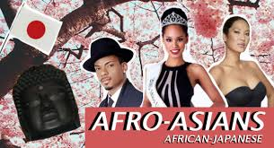

Top 6 Interesting things
Manga&Anime
Movie
Music
Travel
Culture
Education
Blog
Q&A
All Posts in Manga&Anime Section
Top 6 Amazing Restaurants in Anime
Top 6 Brocon and Siscon

Top 6 Come-backs Of Celebrity
Top 6 Difference Between Dragon Ball Z Manga And Anime
Top 6 Introverted Characters In Anime
Top 6 Crossdressing Anime